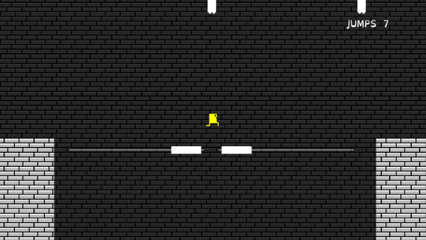

Ten Jumps

Introduction
This game was made for The Fresh Game Jam 2021. I chose to make a platformer as I was looking to improve my skill in designing levels for platformers. I was inspired by a fancy little indie platformer called Un-Evergreen by Motor in which you have a limited number of jumps. I applied the concept of limited jumps to fit the theme "management" (you have to manage your jumps) and worked on improving my level designing skill.
Level Design
Designing the level for this game was tricky since the player has a limited number of jumps to use. Among other things, this restriction forced me to come up with the pink platforms that gave a free instant jump for the player character, adding variety to the gameplay as well as the level.

I created multiple scripts, each with a specific mechanic or behaviour, allowing me to quickly apply any script to any platform that I thought needed that mechanic or combination of mechanics.
Art
In order to improve my skill in creating sprites, I made my own art for most parts of the game using LibreSprite. The brick sprite is reused in both foreground and background with slight change in colour to differentiate one from the other.

Hints
The banners on the wall are hints that convey to the player where they need to use a jump. I set the hints to be invisible by default and added the ability to make them visible on a key press so that the player can choose whether they want the hints, allowing them to change the difficulty level of the game at any time.
Accessibility
Royalty free font "OpenDyslexic" was used in order to provide a relatively better experience to players with dyslexia.